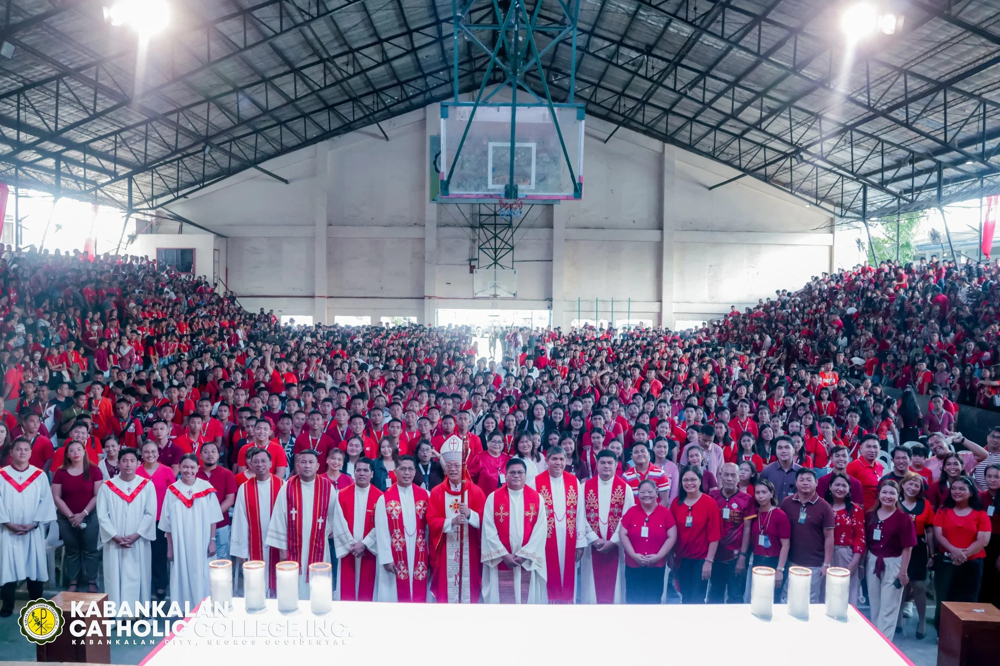

About KCC
Close to a hundred years of forming minds, hearts, and lives in Kabankalan City.

School Philosophy
Kabankalan Catholic College, Inc. is committed to forming socially conscious, responsible, and service-oriented individuals, guided by the teachings of Christ. They embody a profound understanding of the challenges and opportunities inherent in a rapidly evolving world. As an evangelizing arm of the Diocese of Kabankalan, KCC seeks to proclaim and spread the teachings of the Church. The institution shepherds students and the community toward a deeper relationship with Christ; strengthening faith that transforms lives through service, compassion, and steadfast devotion to Christian values. As a preferential option for the poor, Kabankalan Catholic College affirms that education is a universal right. Rooted in a curriculum that integrates the arts, sciences, and the Gospel, a KCC education fosters well-rounded development — one that nurtures each person's mind, body, and soul within a safe and supportive environment. As an educational institution, KCC seeks academic excellence with a strong moral foundation characterized by integrity, compassion, and generosity. Our students and graduates are equipped with the skills, knowledge, and disposition necessary to contribute positively to society and to respond effectively to the needs of the Diocese, the nation, and the global community.
- Vision - Kabankalan Catholic College, Inc., as builder of the future, is a Christ-centered learning community of accountable and socially responsible individuals, that leads positive change, responds to and serves the mission of the Diocese, the nation, and the world.
- Mission - KCC commits to provide quality and inclusive Catholic education, rooted in the Gospel and driven by innovative research and meaningful community engagements, empowering its members to become effective agents of societal transformation.
Students
Programs
Teachers
A Brief History of Kabankalan Catholic College, Inc.
Formerly Kabankalan Academy